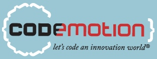

Platinum

Gold
Silver

¿Dónde se celebrará?:
Escuela Universitaria de Informática, Universidad Politécnica de Madrid
Coordenadas GPS: (40.390309, -3.628256)
¿Cómo llegar?
En coche
La Escuela Universitaria está situada al sureste de Madrid.
Una de las formas de llegar es coger la M-40 y salir por la salida hacia Avda. del Mediterráneo y seguir las indicaciones hacia la Escuela Universitaria.
Si vienes de la M-30 tendrás que tomar la salida hacia Conde de Casal, y desde ahí tomar la N-III (Avda. del Mediterráneo). En el km 7 encontrarás el desvío hacia la Escuela Universitaria.
En autobús
En metro
En tren
En avión
- Esta aplicación ha sido desarrollada por:
- Raúl Jiménez Ortega @hhkaos - Frontend Developer
- Con la colaboración de:
- Ricardo Caballero Moral @rcabamo - Mobile Developer
- Javier Cordero Martínez @jneight - Backend Developer
- Patricia Carmona Pulido @Try_Publizistik - Marketer
- Proyectos:
- GeoRemindMe! Experiencias+Recordatorios geolocalizados
- PideCurso Solicitudes colectivas de cursos